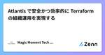
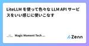

Magic Moment Tech Blogさんのフィード
https://zenn.dev/magicmoment
株式会社 Magic Moment の Tech チームが運営する Tech Blog です。
フィード

Atlantis で安全かつ効率的に Terraform の組織運用を実現する 30
30
Magic Moment Tech Blogさんのフィード
この記事は、Magic Moment Advent Calendar 2024 8 日目の記事です。こんにちは！Magic Moment でソフトウェアエンジニアをやっている Miyake です。私は普段バックエンドアプリケーション開発の傍ら、クラウドインフラの整備や DevOps の推進などを進めています。今回その業務の一環として、Terraform を安全かつ効率的に運用できる Atlantis というツールを導入したので、その機能や運用についてご紹介したいと思います。 弊社のインフラ管理体制弊社ではインフラとして Google Cloud をメインに利用しており、プ...
14時間前
LLMの要約結果を評価する 22
Magic Moment Tech Blogさんのフィード
この記事は Magic Moment Advent Calendar 2024 7 日目の記事です。Magic Moment の @tdoi です。2024年1月にジョインし、Magic Moment の製品開発を担当しております。学生時代に、マルチエージェントシステムに関する研究に従事していました。昨今、LLM の躍進によって、エージェントという言葉を見聞きすることが増えて少しそわそわしています。 はじめにGPT を始めとする LLM の性能の向上は著しく、ここ1、2年は、LLM をいかに活用するかを検討されてきた方も多いのではないでしょうか？LLM の出力が期待以上...
2日前
Prisma Migrate の小ネタ 11
Magic Moment Tech Blogさんのフィード
この記事は Magic Moment Advent Calendar 2024 6 日目の記事です。前回に引き続き @nagomiso です。ラーメンは二郎系が好きだったのですが最近は家系とちゃん系にもハマっています 🍜 デロ麺が好きなので家系はふつうかヤワメを頼みます。ちゃん系はデフォルトで加水率高めの麺なのでよきです。 はじめにこの記事は超小ネタです。気軽な気持ちでご笑覧ください。2024 年は何故か Prisma の Migrate に触れる機会が何度かあったのでそのときの話を記事にします[1]。技術要素弱めで教訓めいた記事になります。 今回遭遇した困りごと ...
3日前

LiteLLM を使って色々な LLM API サービスをいい感じに使いこなす 40
Magic Moment Tech Blogさんのフィード
この記事は Magic Moment Advent Calendar 2024 5 日目の記事です。Magic Moment でプロダクトデータを活用した機能の開発・検討をしている @nagomiso です。気づけば前回の記事から 1 年が経過していました。時間の流れが早すぎて驚きを隠せません。 ここ 1 年での変化としては体重が大幅に増えました。原因は間違いなくラーメンの食べ過ぎです。節制せねば… 🍜 はじめにGoogle が Gemini 1.5 Pro / Flush を公開したり OpenAI が GPT-4o / 4o mini, OpenAI o1 / o1 mi...
6日前
長い処理には通知音コマンドを仕込んでおくと捗るぞ 412
Magic Moment Tech Blogさんのフィード
こんにちは！Magic Moment フロントエンドエンジニアの @morishin です。この記事は、Magic Moment Advent Calendar 2024 4 日目の記事です。 はじめに 開発あるある皆さん開発をしていて、コマンドの "待ち" が長いとき、こんな経験はありませんか。「ビルドに時間がかかるなぁ」(別の作業をする)「もう終わったかな (ﾀｰﾐﾅﾙﾁﾗｰ」「まだかー」(以降無限ループ)作業に集中できない！逆に「このインストール時間かかるなぁ」「終わるまでちょっと休憩しようかな (ｽﾔｧ」〜3 時間後〜「...あっ、いつの間に...
7日前
そうだ、エディタを変えよう 〜ZedでLSPを使用する〜 27
Magic Moment Tech Blogさんのフィード
この記事は Magic Moment Advent Calendar 2024 3 日目の記事です。Magic Moment でエンジニアをしている 栗原 です。みなさん。マイクロサービスアーキテクチャのプロダクトの開発していると、大量に起動したサービスがローカル環境のリソースを圧迫してしまい、エディタが思ったように動いてくれないといったことはありませんか。GCP workstationやGitHub Codespacesなどクラウドベースの開発をすると解決できますがコストが見合わないですし、使うサービスだけ立ち上げてというのも開発している機能によってはできません。PCのスペック...
8日前

Cloud SQL を夜間自動停止してコストを削減してみた
Magic Moment Tech Blogさんのフィード
この記事は、Magic Moment Advent Calendar 2024 2日目の記事です。こんにちは、 Magic Moment で QAE をやっている yano です。今年は Cloud Infra におけるコスト最適化や節約を実施することが多かった一年でした。インフラコスト削減施策の一環で、本番環境ではない環境で利用している Cloud SQL インスタンスは夜間停止することを実施しました。そこで本記事では、コスト削減のために Cloud Scheduler だけを用いて簡単に Cloud SQL インスタンスを自動停止する方法を紹介します。 コスト削減効果...
9日前
私流、開発時における各 AI サービスの使い分け方
Magic Moment Tech Blogさんのフィード
こんにちは！Magic Moment でフロントエンドエンジニアをしている @morishin です。この記事は、Magic Moment Advent Calendar 2024 1 日目の記事です。(弊社の今年のアドベントカレンダーは平日のみ投稿するスタイルです) はじめにChatGPT の登場以降、エンジニアの開発を支援してくれる新しい AI サービスが次々と現れています。それはもう雨後の筍の如く現れるので、正直どれをどう使い分けたら良いのか分からん、という人も少なくないと思います。開発時における各 AI サービスの、自分なりの使い分け方を書いておきます。参考に...
10日前
年間退職率が 37.0% → 3.5% に！
Magic Moment Tech Blogさんのフィード
この記事は、Magic Moment Advent Calendar 2023 25 日目の記事です。 はじめにMerry Christmas!!こんにちは。株式会社 Magic Moment で VPoE をしている 清家 (@wakazooo )です。いよいよ、Advent Calendar も最後となりました。これまで、24回にわたって、技術・組織・開発プロセスなど様々な角度から Magic Moment Tech チームの 2023年の取り組みを紹介してきました。2022 年に比べ、技術力・組織力・発信力とあらゆる面で大きく成長したのですが、その前提となったのが退...
1年前
外部サービスからのデータ取り込み処理は二度走る
Magic Moment Tech Blogさんのフィード
この記事は、Magic Moment Advent Calendar 2023 24 日目の記事です。こんにちは、Magic Moment で Software Engineer をやっている onishi です。本記事では、実在の問い合わせチケットの調査をもとに問い合わせが来た際のエンジニアの調査の流れをまとめさせていただこうと思います。 MMP というサービスについてMagic Moment Playbook(以下 MMP と称する)は営業組織の出力を最大化する SaaS です。営業活動量を圧倒的に増やし、全ての営業活動から優れた顧客体験を生み出すことができます。弊社の...
1年前
GoエンジニアがReactにチャレンジして驚いた5つのこと
Magic Moment Tech Blogさんのフィード
はじめにこんにちは。Magic Momentでエンジニアをしている伊藤です。いつもはMagic MomentのプロダクトであるMagic Moment Playbookの開発に携わっています。元々はGo言語エンジニアとしてMagic Moment Playbookのバックエンド開発に参加し始めました。ですが、今回フロントエンドエンジニアとしてフロント側の開発に参加することとなりました。Go言語を使っていたエンジニアがReactを使い始めて驚いたこと、理解しづらかった部分などを書いていこうと思います。これからフロントをやってみたいと思うバックエンドエンジニアの方の参考になれ...
1年前
開発健全性(生産性ではないよ)のメトリクスを設計して運用してみた
Magic Moment Tech Blogさんのフィード
この記事は、Magic Moment Advent Calendar 2023 22日目の記事です。こんにちは、Magic Moment で QAE をやっている yano です。本記事では、開発チームの健全性を示すメトリクスを設計し、計測と運用を始めて3ヶ月ほど経とうとしているタイミングなので、振り返りを兼ねて気づきをまとめさせていただこうと思います。 なぜ生産性ではなく健全性のメトリクスなの?最初は生産性メトリクスの設計を考えていましたが、例えばコードの記述量や、スプリントにおけるベロシティなどアウトプットの質を度外視して量だけを追っていくような、ビルドトラップに繋がりか...
1年前
Engineering Manager として大事にしている7つの事
Magic Moment Tech Blogさんのフィード
この記事は、Magic Moment Advent Calendar 2023 21 日目の記事です。こんにちは! Magic Moment で Senior Engineering Manager 兼 SRE Engineering Manager をやっている 木村 (@ryurock) です。4日目では、SRE Engineering Manager Role として「SRE を立ち上げた4ヶ月後の世界」を投稿させていただきましたが、本日は Senior Engineering Manager として大事にしている7つの事。というテーマでアドカレやっていきたいと思っています...
1年前
完全に理解した、TooltipとPopoverの違い
Magic Moment Tech Blogさんのフィード
この記事は Magic Moment Advent Calendar 2023 20 日目の記事です。こんにちは。Magic Momentでフロントエンドエンジニアをしている根岸と申します！本記事では、今まで自身の中で何となく分かったつもりだった 2 つの UI コンポーネント、TooltipとPopoverの違いについて改めて調べてみたので、MUIなどの UI ライブラリを参照しつつまとめていきます。 なぜ両者の違いを調べようと思ったのか？その前に、なぜTooltipとPopoverの違いを知りたいと思ったのかについて、軽く触れてみたいと思います。先に言ってしまうと、それ...
1年前
E2E 自動テストの布教に立ち塞がる5つの壁と打ち込んだ楔
Magic Moment Tech Blogさんのフィード
この記事は、Magic Moment Advent Calendar 2023 19日目の記事です。こんにちは、 Magic Moment の一人だけ QAE の yano です。一人だけの QAE が GUI を用いた E2E 自動テスト(以降、自動テストと表記)を書いて運用していくことは、自動テストの新規作成やメンテナンスを行うには限界がありますし、他の QA 活動が進まなくなるという問題が出てきてしまいます。そこで今回は QAE ではなく開発メンバが主体となって自動テストの運用をできるように仕組みを整える必要がありました。本記事では自動テストを開発メンバに布教していく際に...
1年前
M2 MacBook Air (M2, 2022) を DisplayLink を使用して2台の外部ディスプレイに接続する
Magic Moment Tech Blogさんのフィード
この記事は、Magic Moment Advent Calendar 2023 18日目の記事です。Magic Moment の渡辺です。業務で使用している MacBook Air (M2, 2022) を DisplayLink を使用して2台の外部ディスプレイに接続したので今回はその方法を紹介します。 MacBook Air (M2, 2022) は2台以上の外部ディスプレイをサポートしていないMacBook Air (M2, 2022) の技術仕様には、1台の外部ディスプレイで最大6K解像度、60Hzをサポートしていると記載されています。つまり、技術仕様的には...
1年前
開発チームの一体感を出すために専用のバーチャル背景を作ろうとしたら、いつの間にかシェルスクリプトを触っていた話
Magic Moment Tech Blogさんのフィード
この記事は、Magic Moment Advent Calendar 2023 17日目の記事です。どうもこんにちは、Magic Moment の @morishin です。 お前は一体何を言っているんだ？タイトルだけでは何を言っているか分からないと思うので説明します。弊社のアドベントカレンダーページにも載っているコレ。コレは見ての通りコマンドの実行結果 (標準出力) で、元々は開発チーム専用のバーチャル背景画像として作り始めたものでした。「バーチャル背景画像からなんでシェルスクリプト？」とお思いでしょうから順番にご説明します。 そもそもバーチャル背景画像を作ること...
1年前
goroutine leakを解消したい！
Magic Moment Tech Blogさんのフィード
この記事は、Magic Moment Advent Calendar 2023 15日目の記事です。こんにちは！Magic Moment で Backend Engineerをしている 大塚 です。Magic MomentではGo言語によるマイクロサービス開発をしているのですが、ある日、あるサービスのメモリ使用量が継続的に上昇する現象を観測しました。そこで、どういった調査をしてどのように解消までいったかをまとめました。 メモリ使用量の上昇を観測メモリ使用量が日々上昇していることが確認できます。さっそくどこで何が原因でメモリリークしているか確認してみます。 Cloud...
1年前
Cloud Pub/Subで考慮したこと
Magic Moment Tech Blogさんのフィード
この記事は、Magic Moment Advent Calendar 2023 14日目の記事です。Magic Moment の@kntowdです。先日とある非同期処理を含む機能を、Cloud Pub/Subを利用して開発することになりました。Cloud Pub/Subについて調べる前の私は、TopicとSubscriptionを作成すれば良いと思っていたのですが、調べてみると考慮しなくてはいけないことが多くあることに気づきました。紆余曲折があり結局Cloud Pub/Subを使わなくなってしまったのですが、頑張って調べた内容が日の目を浴びないのは悲しいので、本記事では個人的に重要...
1年前
セマンティックトークンの構造化は Animal Kingdom (アニキン) 手法がおすすめ
Magic Moment Tech Blogさんのフィード
この記事は Magic Moment Advent Calendar 2023 13 日目の記事です。 はじめに株式会社 Magic Moment でフロントエンドエンジニアをしている清水です！今日のアドベントカレンダーでは、セマンティックトークン を定義するのに、私の中で最強の手法「アニキン」についてお話しさせていただきます！ デザイントークン弊社では、デザイントークンを プリミティブトークン と セマンティックトークン の２種類に分けて構成しております。 プリミティブトークンとは？値を表すトークンです原始的な存在です セマンティックトークンとは？意...
1年前